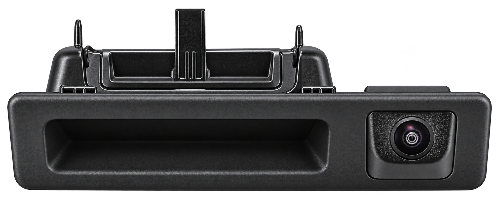
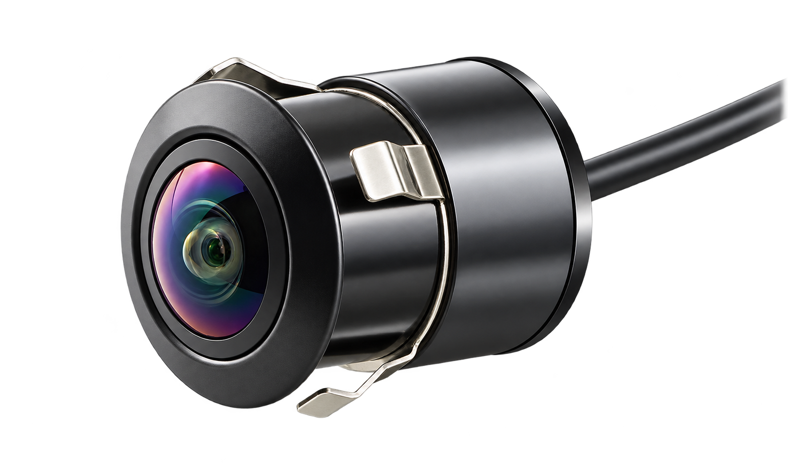

BMW Multimedia Upgrade — Option 2
Replacing the factory screen with a new one in a modern touchscreen display with Apple CarPlay and Android Auto support.
Replacing the factory screen with a new one in a modern touchscreen display with Apple CarPlay and Android Auto support.

A rear-view camera is the perfect addition when upgrading your vehicle. It is installed either in the factory-designated location or integrated so seamlessly that it looks as if it came fitted from the factory.

A front-view camera helps you spot low obstacles and judge the distance to kerbs, making parking and manoeuvring in tight spaces easier.